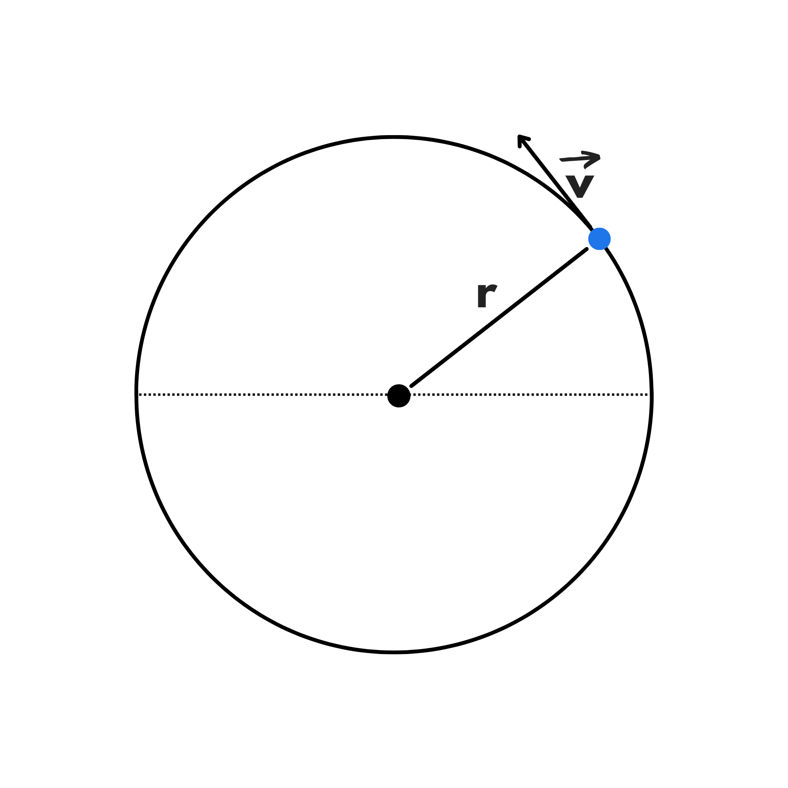

Ora che abbiamo visto i principali moti in una retta, è arrivato il momento di analizzare i moti in un cerchio. Iniziamo guardando un caso particolare di moto circolare: il moto circolare uniforme. In questo caso, la velocità è costante ed è un vettore tangente alla circonferenza, come nel grafico seguente:
Ricordiamo che:
\(v={\Delta S \over \Delta t}\)
Siccome la velocità è costante, possiamo calcolarla usando qualsiasi tragitto. Quindi possiamo prendere un giro completo come tragitto. Di conseguenza la distanza percorsa \(\Delta S\) sarà uguale alla circonferenza.
Il tempo impiegato per percorrere un giro completo è molto importante in fisica e si chiama periodo. Si indica solitamente con la lettera \(T\).
Di conseguenza avremo:
\(v={2\pi r \over T}\)
Un’altra importante grandezza fisica è la frequenza. Essa è uguale al numero di giri effettuati in un’unità di tempo. Siccome il corpo impiega un periodo per completare un giro, avremo:
\(\ f={1 \over T}\)
Di conseguenza possiamo riscrivere la nostra velocità anche come:
\(\ v={2 \pi r} \cdot {1 \over T}=2\pi rf\)
Ora vediamo un'altra grandezza,la velocità angolare. Spesso indicata con la lettera \(\omega\), è la velocità con cui viene spazzato l’angolo del tratto percorso.
La velocità angolare ci permette quindi di capire quanto sta ruotando velocemente.
Siccome anche \(\omega\) è costante, possiamo calcolarla usando un intero giro. Quindi:
\(w=\frac{2\pi}{T}\)
Non abbiamo scritto \(\ 360^{\circ} \) ma il suo valore in radianti perché quando calcoliamo la velocità angolare dobbiamo usare i radianti.
Ricordiamo che per tramutare un angolo da gradi a radianti o viceversa, basta usare la seguente proporzione:
\(\ a:360^{\circ}=b:2\pi\)
Dove \(a\) è l’angolo in gradi e \(b\) è quello in radianti.
Grazie a questo troviamo un’altra formula per calcolare la nostra velocità:
\(\ v={2\pi \over T}\cdot r=wr\)
L’ultima grandezza fisica da studiare è l’accelerazione centripeta. Si chiama centripeta perché punta sempre verso il centro.
Perché abbiamo un’accelerazione anche se la velocità è costante?
Perchè in questo caso non sta cambiando il suo modulo ma la sua posizione. La velocità infatti ruota mentre il corpo si muove:
Possiamo calcolare l’accelerazione centripeta con la seguente formula:
\(\ a_c ={v^2 \over r}\)
Se invece vogliamo esprimerla attraverso la velocità angolare e non la velocità, possiamo calcolarla come:
\(\ a_c={v^2 \over r}=\) \({(wr)^2 \over r}=\) \(w^2 r\)
Questo è tutto quello che c’è da sapere sul moto circolare uniforme.